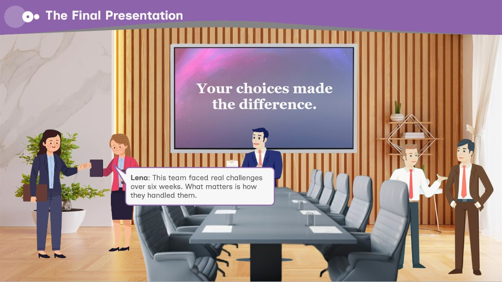

Together We Win: Navigating Teamwork Challenges

Audience
New and early-career team members. People who work inside teams but don't lead them, and whose influence comes from judgment rather than authority.
The gap
Teamwork training tends to teach principles nobody disagrees with. People can name active listening, accountability and assertive communication long before they can do any of them in a meeting where a senior colleague has just dismissed a quieter one and everyone is waiting for someone to speak. The gap isn't knowledge, it's the cost of acting on it in the moment. Traditional right-and-wrong training can't reach that, because when the answer is obvious on screen it stops resembling the situation it's meant to prepare you for.
The approach
Rather than explaining what good teamwork looks like, the course places the learner inside a six-week project where a dominant colleague, a hesitant one and an approaching deadline make every choice uncomfortable. Each decision carries a consequence the learner watches play out before the story moves on.
What success looked like
Success was defined behaviourally rather than by assessment score. A learner should finish able to recognise the moment where speaking up matters, and understand that the same situation ends three different ways depending on what they do. The branching structure and cumulative trust score exist to make that visible. The ending you reach is the one your choices earned, not one the course hands you.
Role
Instructional Designer, Content Developer
Tools
Articulate Storyline, PowerPoint, Canva
Timeline
5 Minutes
Audience
New and early-career team members in cross-functional teams
Design approach
The scenario is built as a double diamond: two decision points, each opening into three paths that converge before the next one. The Silent Conflict splits into Taking the Lead, The Side Conversation and Tension Escalates; all three return to The Missed Deadline. That scene splits again into Trust Rebuilt, Burnout Risk and Team Fractures; all three return to The Final Presentation. Convergence was the structural decision the whole build rests on, fully independent branching across three decisions would have meant twenty-seven distinct paths, most of them never seen by any learner. Convergence keeps the build at fifteen scenes while preserving the thing that matters: choices change what the learner experiences, not just what they're told afterwards. The Missed Deadline sits at the convergence point deliberately. Whatever the learner did in week one, the team misses the client deadline. The failure is not a punishment for bad choices, it's the condition everyone has to respond to. That's what makes accountability the moral centre of the piece rather than an optional good outcome.
Key decisions
Consequences on layers, not slides. Each choice triggers a slide layer showing what happened before the story advances. This keeps the learner in the moment instead of jumping them to a feedback screen, and it kept the scene count manageable. A behavioural gradient in the options. Across all four decisions, the options follow the same underlying dimension: direct and transparent action, deferral or private handling, avoidance or deflection. The learner is weighing the same question at every decision, which is what allows the trust score to mean something cumulative rather than being four unrelated quizzes. Trust as a variable, not a grade. TrustScore starts at 50 and moves +10, 0 or −10 per decision. It gates three endings at 60 and 40. The number is not a mark out of a hundred, it's a running measure of what the learner has built or spent with the team, and The Final Presentation simply shows the team they made. Reflection without scoring. Trust Rebuilt, Burnout Risk and Team Fractures each carry an open reflection prompt and no score movement. After the hardest decision in the piece, the learner needs a pause to think rather than another thing to optimise.
Challenges
The main one was scope. Branching scenarios grow exponentially, and the first structure was unbuildable at any reasonable effort. Convergence at two points solved it, but only because the convergence moments were chosen for narrative reasons rather than convenience. A missed deadline and a final presentation are both events that would happen regardless of what an individual did, so the joins don't feel artificial.
Launch the course →